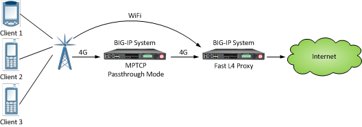

Updated Date: 07/07/2026
Protocol Profiles
Some of the BIG-IP system profiles that you can configure are known as protocol profiles. The protocol profiles types are:
- Fast L4
- Fast HTTP
- UDP
- SCTP
For each protocol profile type, the BIG-IP system provides a pre-configured profile with default settings. In most cases, you can use these default profiles as is. If you want to change these settings, you can configure protocol profile settings when you create a profile, or after profile creation by modifying the profile’s settings.
To configure and manage protocol profiles, log in to the BIG-IP Configuration utility, and on the Main tab, expand Local Traffic, and click Profiles.
The purpose of a Fast L4 profile is to help you manage Layer 4 traffic more efficiently. When you assign a Fast L4 profile to a virtual server, the Packet Velocity® ASIC (PVA) hardware acceleration within the BIG-IP system (if supported) can process some or all of the Layer 4 traffic passing through the system. By offloading Layer 4 processing to the PVA hardware acceleration, the BIG-IP system can increase performance and throughput for basic routing functions (Layer 4) and application switching (Layer 7).
You can use a Fast L4 profile with these types of virtual servers: Performance (Layer 4), Forwarding (Layer 2), and Forwarding (IP).
When you implement a Fast L4 profile, you can instruct the system to dynamically offload flows in a connection to ePVA hardware, if your BIG-IP system supports such hardware. When you enable the PVA Offload Dynamic setting in a Fast L4 profile, you can then configure these values:
- The number of client packets before dynamic ePVA hardware re-offloading occurs. The valid range is from 0 (zero) through 10. The default is 1.
- The number of server packets before dynamic ePVA hardware re-offloading occurs. The valid range is from 0 (zero) through 10. The default is 0.
The Fast L4 profile type includes two settings you can configure for prioritizing traffic flows when ePVA flow acceleration is being used:
- PVA Offload Initial Priority
- Specifies the initial priority level for traffic flows that you want to be inserted into the flow accelerator. Supported initial priority levels are high, medium, and low. Setting an intial priority enables the BIG-IP system to observe flows and adjust the priority as needed. If both directions are being accelerated, the initial priority level applies to both directions of the packets on a flow. The default value is Medium.
- PVA Offload Dynamic Priority
- You can enable this setting on the Fast L4 profile. The default value is Disabled.
Note that prioritizing flow insertion into the flow accelerator:
- Applies to UDP and TCP traffic only.
- Functions on a per-Fast L4 profile and per-virtual server basis.
- Is supported on ePVA hardware platforms only.
The table shown describes three of the Fast L4 profle settings – Server Sack, Server Timestamp, and Receive Window.
| Setting | Description |
|---|---|
| Server Sack | Specifies whether the BIG-IP system processes Selective ACK (Sack) packets in cookie responses from the server. The default is disabled. |
| Server Timestamp | Specifies whether the BIG-IP system processes timestamp request packets in cookie responses from the server. The default is disabled. |
| Receive Window | Specifies the amount of data the BIG-IP system can accept without acknowledging the server. The default value is 0 (zero). |
The Fast HTTP profile is a configuration tool designed to speed up certain types of HTTP connections. This profile combines selected features from the TCP Express, HTTP, and OneConnect™ profiles into a single profile that is optimized for the best possible network performance. When you associate this profile with a virtual server, the virtual server processes traffic packet-by-packet, and at a significantly higher speed.
You might consider using a Fast HTTP profile when:
- You do not need features such as remote server authentication, SSL traffic management, and TCP optimizations, nor HTTP features such as data compression, pipelining, and RAM Cache.
- You do not need to maintain source IP addresses.
- You want to reduce the number of connections that are opened to the destination servers.
- The destination servers support connection persistence, that is, HTTP/1.1, or HTTP/1.0 with
Keep-Aliveheaders. Note that IIS servers support connection persistence by default. - You need basic iRule support only (such as limited Layer 4 support and limited HTTP header operations). For example, you can use the iRule events
CLIENT_ACCEPTED,SERVER_CONNECTED, andHTTP_REQUEST.
A significant benefit of using a Fast HTTP profile is the way in which the profile supports connection persistence. Using a Fast HTTP profile ensures that for client requests, the BIG-IP system can transform or add an HTTP Connection header to keep connections open. Using the profile also ensures that the BIG-IP system pools any open server-side connections. This support for connection persistence can greatly reduce the load on destination servers by removing much of the overhead caused by the opening and closing of connections.
Note: The Fast HTTP profile is incompatible with all other profile types. Also, you cannot use this profile type in conjunction with VLAN groups, or with the IPv6 address format.
When writing iRules®, you can specify a number of events and commands that the Fast HTTP profile supports.
You can use the default fasthttp profile as is, or create a custom Fast HTTP profile.
TCP profiles are configuration tools that help you to manage TCP network traffic. Many of the configuration settings of TCP profiles are standard SYSCTL types of settings, while others are unique to the BIG-IP system.
TCP profiles are important because they are required for implementing certain types of other profiles. For example, by implementing TCP, HTTP, Rewrite, HTML, and OneConnect™ profiles, along with a persistence profile, you can take advantage of various traffic management features, such as:
- Content spooling, to reduce server load
- OneConnect, to pool idle server-side connections
- Layer 7 session persistence, such as hash or cookie persistence
- iRules® for managing HTTP traffic
- HTTP data compression
- HTTP pipelining
- URI translation
- HTML content modification
- Rewriting of HTTP redirections
The BIG-IP system includes several pre-configured TCP profiles that you can use as is. In addition to the default tcp profile, the system includes TCP profiles that are pre-configured to optimize LAN and WAN traffic, as well as traffic for mobile users. You can use the pre-configured profiles as is, or you can create a custom profile based on a pre-configured profile and then adjust the values of the settings in the profiles to best suit your particular network environment.
The tcp-lan-optimized and f5-tcp-lan profiles are pre-configured profiles that can be associated with a virtual server. In cases where the BIG-IP virtual server is load balancing LAN-based or interactive traffic, you can enhance the performance of your local-area TCP traffic by using the tcp-lan-optimized or the f5-tcp-lan profiles.
If the traffic profile is strictly LAN-based, or highly interactive, and a standard virtual server with a TCP profile is required, you can configure your virtual server to use the tcp-lan-optimized or f5-tcp-lan profiles to enhance LAN-based or interactive traffic. For example, applications producing an interactive TCP data flow, such as SSH and TELNET, normally generate a TCP packet for each keystroke. A TCP profile setting such as Slow Start can introduce latency when this type of traffic is being processed.
You can use the tcp-lan-optimized or f5-tcp-lan profile as is, or you can create another custom profile, specifying the tcp-lan-optimized or f5-tcp-lan profile as the parent profile.
The tcp-wan-optimized and f5-tcp-wan profiles are pre-configured profile types. In cases where the BIG-IP system is load balancing traffic over a WAN link, you can enhance the performance of your wide-area TCP traffic by using the tcp-wan-optimized or f5-tcp-wan profiles.
If the traffic profile is strictly WAN-based, and a standard virtual server with a TCP profile is required, you can configure your virtual server to use a tcp-wan-optimized or f5-tcp-wan profile to enhance WAN-based traffic. For example, in many cases, the client connects to the BIG-IP virtual server over a WAN link, which is generally slower than the connection between the BIG-IP system and the pool member servers. If you configure your virtual server to use the tcp-wan-optimized or f5-tcp-wan profile, the BIG-IP system can accept the data more quickly, allowing resources on the pool member servers to remain available. Also, use of this profile can increase the amount of data that the BIG-IP system buffers while waiting for a remote client to accept that data. Finally, you can increase network throughput by reducing the number of short TCP segments that the BIG-IP system sends on the network.
You can use the tcp-wan-optimized or f5-tcp-wan profiles as is, or you can create another custom profile, specifying the tcp-wan-optimized or f5-tcp-wan profile as the parent profile.
The tcp-mobile-optimized profile is a pre-configured profile type, for which the default values are set to give better performance to service providers’ 3G and 4G customers. Specific options in the pre-configured profile are set to optimize traffic for most mobile users, and you can tune these settings to fit your network. For files that are smaller than 1 MB, this profile is generally better than the mptcp-mobile-optimized profile. For a more conservative profile, you can start with the tcp-mobile-optimized profile, and adjust from there.
Note: Although the pre-configured settings produced the best results in the test lab, network conditions are extremely variable. For the best results, start with the default settings and then experiment to find out what works best in your network.
This list provides guidance for relevant settings
- Set the Proxy Buffer Low to the Proxy Buffer High value minus 64 KB. If the Proxy Buffer High is set to less than 64K, set this value at 32K.
- The size of the Send Buffer ranges from 64K to 350K, depending on network characteristics. If you enable the Rate Pace setting, the send buffer can handle over 128K, because rate pacing eliminates some of the burstiness that would otherwise exist. On a network with higher packet loss, smaller buffer sizes perform better than larger. The number of loss recoveries indicates whether this setting should be tuned higher or lower. Higher loss recoveries reduce the goodput.
- Setting the Keep Alive Interval depends on your fast dormancy goals. The default setting of
1800seconds allows the phone to enter low power mode while keeping the flow alive on intermediary devices. To prevent the device from entering an idle state, lower this value to under 30 seconds. - The Congestion Control setting includes delay-based and hybrid algorithms, which might better address TCP performance issues better than fully loss-based congestion control algorithms in mobile environments. The Illinois algorithm is more aggressive, and can perform better in some situations, particularly when object sizes are small. When objects are greater than 1 MB, goodput might decrease with Illinois. In a high loss network, Illinois produces lower goodput and higher retransmissions.
- For 4G LTE networks, specify the Packet Loss Ignore Rate as
0. For 3G networks, specify2500. When the Packet Loss Ignore Rate is specified as more than0, the number of retransmitted bytes and receives SACKs might increase dramatically. - For the Packet Loss Ignore Burst setting, specify within the range of
6-12, if the Packet Loss Ignore Rate is set to a value greater than0. A higher Packet Loss Ignore Burst value increases the chance of unnecessary retransmissions. - For the Initial Congestion Window Size setting, round trips can be reduced when you increase the initial congestion window from
0to10or16. - Enabling the Rate Pace setting can result in improved goodput. It reduces loss recovery across all congestion algorithms, except Illinois. The aggressive nature of Illinois results in multiple loss recoveries, even with rate pacing enabled.
A tcp-mobile-optimized profile is similar to a TCP profile, except that the default values of certain settings vary, in order to optimize the system for mobile traffic.
You can use the tcp-mobile-optimized profile as is, or you can create another custom profile, specifying the tcp-mobile-optimized profile as the parent profile.
The mptcp-mobile-optimized profile is a pre-configured profile type for use in reverse proxy and enterprise environments for mobile applications that are front-ended by a BIG-IP system. This profile provides a more aggressive starting point than the tcp-mobile-optimized profile. It uses newer congestion control algorithms and a newer TCP stack, and is generally better for files that are larger than 1 MB. Specific options in the pre-configured profile are set to optimize traffic for most mobile users in this environment, and you can tune these settings to accommodate your network.
Note: Although the pre-configured settings produced the best results in the test lab, network conditions are extremely variable. For the best results, start with the default settings and then experiment to find out what works best in your network.
The enabled Multipath TCP (MPTCP) option enables multiple client-side flows to connect to a single server-side flow in a forward proxy scenario. MPTCP automatically and quickly adjusts to congestion in the network, moving traffic away from congested paths and toward uncongested paths.
The Congestion Control setting includes delay-based and hybrid algorithms, which can address TCP performance issues better than fully loss-based congestion control algorithms in mobile environments. Refer to the online help descriptions for assistance in selecting the setting that corresponds to your network conditions.
The enabled Rate Pace option mitigates bursty behavior in mobile networks and other configurations. It can be useful on high latency or high BDP (bandwidth-delay product) links, where packet drop is likely to be a result of buffer overflow rather than congestion.
An mptcp-mobile-optimized profile is similar to a TCP profile, except that the default values of certain settings vary, in order to optimize the system for mobile traffic.
You can use the mptcp-mobile-optimized profile as is, or you can create another custom profile, specifying the mptcp-mobile-optimized profile as the parent profile.
The TCP Profile provides you with multipath TCP (MPTCP) functionality, which eliminates the need to reestablish connections when moving between 3G/4G and WiFi networks. For example, when using MPTCP functionality, if a WiFi connection is dropped, a 4G network can immediately provide the data while the device attempts to resume a WiFi connection, thus preventing a loss of streaming. The TCP profile provides three MPTCP settings: Enabled, Passthrough, and Disabled.
You can use the MPTCP Enabled setting when you know all of the available MPTCP flows related to a specific session. The BIG-IP system manages each flow as an individual TCP flow, while splitting and rejoining flows for the MPTCP session. Note that overall flow optimization, however, cannot be guaranteed; only the optimization for an individual flow is guaranteed.
The MPTCP Passthrough setting enables MPTCP header options to pass through, while recognizing that not all corresponding flows to the sessions will be going through the BIG-IP system. This passthrough functionality is especially beneficial when you want to respect the MPTCP header options, but recognize that not all corresponding flows to the session will be flowing through the BIG-IP system. In Passthrough mode, the BIG-IP system allows MPTCP options to pass through, while managing the flow as a FastL4 flow. The MPTCP Passthrough setting redirects flows that come into a Layer 7 virtual server to a Fast L4 proxy server. This configuration enables flows to be added or dropped, as necessary, as the user’s coverage changes, without interrupting the TCP connection. If a Fast L4 proxy server fails to match, then the flow is blocked.

When you do not need to support MPTCP header options, you can select the MPTCP Disabled setting, so that the BIG-IP system ignores all MPTCP options and simply manages all flows as TCP flows.
By default, the BIG-IP system receives a TCP acknowledgement (ACK) whenever the system sends a segment with the PUSH (PSH) bit set in the Code bits field of the TCP header. This frequent receipt of ACKs can affect BIG-IP system performance.
To mitigate this issue, you can configure a TCP profile setting called PUSH Flag to control the number of ACKs that the system receives as a result of setting the PSH bit in a TCP header. You can choose from these PUSH Flag values:
- Default
- The BIG-IP system retains its current behavior, receiving an ACK whenever the system sends a segment with the PSH bit set.
- None
- The BIG-IP system never sets the PSH flag when sending a TCP segment so that the system will not receive an ACK in response.
- One
- The BIG-IP system sets the PSH flag once per connection, when the FIN flag is set.
- Auto
- The BIG-IP system sets the PSH flag in these cases:
- When the receiver’s Receive Window size is close to 0.
- Once per round-trip time (RTT), that is, the length of time that the BIG-IP system sends a signal and receives an acknowledgement (ACK).
- When the BIG-IP system receives the event HUDCTL_RESPONSE_DONE.
Auto settings in TCP will use network measurements to set the optimal size for proxy buffer, receive window, and send buffer. Each TCP flow estimates the send/receive side bandwidth and sets the send/receive buffer size dynamically. Auto settings help to optimize performance and avoid excessive memory consumption. These features are disabled by default.
| Setting | Description |
|---|---|
| Auto Proxy Buffer | TCP sets the proxy buffer high based on MAX. |
| Auto Receive Window | TCP receiver infers the bandwidth and continuously sets the receive window size. |
| Auto Send Buffer | TCP sender infers the bandwidth and continuously sets the send buffer size. |
The UDP profile is a configuration tool for managing UDP network traffic.
Because the BIG-IP system supports the OpenSSL implementation of datagram Transport Layer Security (TLS), you can optionally assign both a UDP and a Client SSL profile to certain types of virtual servers.
One of the tasks for configuring the BIG-IP system to manage UDP protocol traffic is to create a UDP profile. A UDP PROFILE contains properties that you can set to affect the way that the BIG-IP system manages the traffic.
-
On the Main tab of the BIG-IP Configuration utility, click Local Traffic > Profiles > Protocols > UDP.
The UDP profile list screen opens.
-
Click Create.
-
In the Profile Name field, type a name, such as
my_udp_profile. -
Configure all other settings as needed.
-
Click Finished.
After you complete this task, the BIG-IP system configuration contains a UDP profile that you can assign to a BIG-IP virtual server.
You can create an iRule to enable rate limiting for egress UDP traffic flows, on a per-flow basis. Such an iRule includes the command UDP::max_rate or the performance method UDP_METHOD_MAX_RATE. With this command or method, you can specify an upper limit, in bytes per second, for the rate of a UDP flow. By default, UDP rate limiting is disabled.
When the packet flow rate exceeds the configured value, the BIG-IP system begins to queue the packets in a buffer with an upper threshold, in bytes, that you define. If you do not configure a maximum rate limit, then no memory is allocated for a UDP send buffer.
You can configure a UDP send buffer in a UDP profile. A UDP send buffer is a means of holding unsent packets in a queue, up to a configured maximum buffer size, in bytes. Queueing begins when the ingress packet rate starts to exceed the egress rate limit specified in the iRule. Once the ingress rate falls below the egress rate limit, the system tries to retransmit the queued packets.
The maximum UDP send buffer size has a small default value of 65535 bytes. If the send buffer gets close to filling up, the BIG-IP system begins dropping some of the packets according to a queue dropping strategy. This system behavior of dropping only a few packets instead of all packets causes the UDP sender’s congestion control to adapt, resulting in improved user experience.
If the number of packets in the send buffer reaches the configured maximum buffer size, all other incoming UDP packets are dropped.
Important: The BIG-IP system only uses the configured UDP send buffer when the UDP maximum egress rate limit is enabled. If the egress rate limit is disabled, the system refrains from allocating memory for the send buffer.
Before doing this task to specify a send buffer threshold, confirm that you have created an iRule to impose a rate limit on UDP packet flows.
When you configure a maximum rate limit for a UDP packet flow, you can also set a threshold, in bytes, for a UDP send buffer. A UDP send buffer is a mechanism that the BIG-IP system creates to store any UDP packets that cause the egress packet flow to exceed the configured rate limit. When you set a byte threshold for a send buffer, the BIG-IP system can queue packets up to the threshold value instead of dropping them, thereby enabling the BIG-IP system to retransmit the queued packets later when the egress packet flow rate drops below the configured rate limit.
-
Using the BIG-IP system’s management IP address, log in to the BIG-IP Configuration utility.
-
On the Main tab, click Local Traffic > Profiles > Protocol > UDP.
The BIG-IP system displays the list of existing UDP profiles.
-
In the Name column, click the name of the profile for which you want to configure a UDP send buffer.
The BIG-IP system displays the profile properties.
-
For the Send Buffer setting, retain or change the default value, in bytes.
Note that the default value is relatively small,
655350. -
Click Update.
After you perform this task, the BIG-IP system can store and retransmit packets that would normally be dropped because the maximum rate limit was exceeded.
To ensure a complete configuration, make sure that you have assigned this UDP profile, as well as the iRule specifying the egress rate limit, to a virtual server.
The BIG-IP system includes a profile type that you can use to manage Stream Control Transmission Protocol (SCTP) traffic. Stream Control Transmission Protocol (SCTP) is a general-purpose, industry-standard transport protocol, designed for message-oriented applications that transport signalling data. The design of SCTP includes appropriate congestion-avoidance behavior, as well as resistance to flooding and masquerade attacks.
Unlike TCP, SCTP includes the ability to support multistreaming functionality, which permits several streams within an SCTP connection. While a TCP stream refers to a sequence of bytes, an SCTP stream represents a sequence of data messages. Each data message (or chunk) contains an integer ID that identifies a stream, an application-defined Payload Protocol Identifier (PPI), a Stream sequence number, and a Transmit Serial Number (TSN) that uniquely identifies the chunk within the SCTP connection. Chunk delivery is acknowledged using TSNs sent in selective acknowledgements (ACKs) so that every chunk can be independently acknowledged. This capability demonstrates a significant benefit of streams, because it eliminates head-of-line blocking within the connection. A lost chunk of data on one stream does not prevent other streams from progressing while that lost chunk is retransmitted.
SCTP also includes the ability to support multihoming functionality, which provides path redundancy for an SCTP connection by enabling SCTP to send packets between multiple addresses owned by each endpoint. SCTP endpoints typically configure different IP addresses on different network interfaces to provide redundant physical paths between the peers. For example, a client and server might be attached to separate VLANs. The client and server can each advertise two IP addresses (one per VLAN) to the other peer. If either VLAN is available, then SCTP can transport packets between the peers.
You can use SCTP as the transport protocol for applications that require monitoring and detection of session loss. For such applications, the SCTP mechanisms to detect session failure actively monitor the connectivity of a session.
With the Any IP profile, you can enforce an idle timeout value on IP traffic other than TCP and UDP traffic. You can use the BIG-IP Configuration utility to create, view details for, or delete Any IP profiles.
When you configure an idle timeout value, you specify the number of seconds for which a connection is idle before the connection is eligible for deletion. The default value is 60 seconds. Possible values that you can configure are:
- Specify
- Specifies the number of seconds that the Any IP connection is to remain idle before it can be deleted. When you select Specify, you must also type a number in the box.
- Immediate
- Specifies that you do not want the connection to remain idle, and that it is therefore immediately eligible for deletion.
- Indefinite
- Specifies that Any IP connections can remain idle indefinitely.